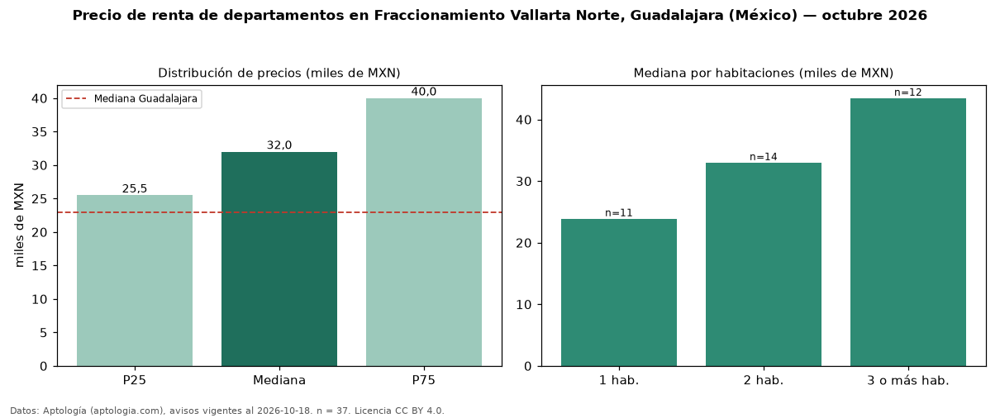

Precio de renta de departamentos en Fraccionamiento Vallarta Norte, Guadalajara (México) — octubre 2026
MXN 32.000 al mes es el canon mediano de departamentos en renta en Fraccionamiento Vallarta Norte, Guadalajara (México) (n = 37 avisos). Eso es 39 % por encima de la mediana de Guadalajara para departamentos (MXN 23.000). Por metro cuadrado, la mediana es MXN 292/m² al mes (n = 36 avisos con área), 2 % por debajo de Guadalajara (MXN 299/m²). Por precio mediano es el puesto 1 de 8 colonias de Guadalajara con al menos 30 avisos de departamentos en renta (MXN): entre las más caras. El área mediana anunciada es 125 m². El segmento con más oferta es el de 2 habitaciones (14 avisos, mediana MXN 33.000); pasar de 1 habitación a 3 o más habitaciones cambia la mediana +82 %. La mitad central de los avisos va de MXN 25.500 a MXN 40.000 (razón 1,6), una dispersión moderada. Datos: Aptología (aptologia.com), CC BY 4.0 — https://www.aptologia.com/. Archivos: PDF, CSV con las cifras y gráfica PNG.

| Avisos únicos | 37 |
|---|---|
| Percentil 25 | COP 25.500 |
| Mediana | COP 32.000 |
| Percentil 75 | COP 40.000 |
| Mediana por m² | COP 292 |
Fuente: avisos vigentes de portales inmobiliarios recopilados por Aptología, deduplicados (mínimo 30 avisos únicos por celda). Precios pedidos, no cerrados. Fecha: 2026-10-18.